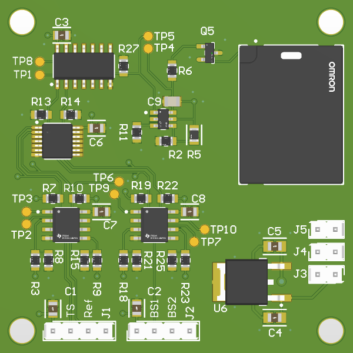
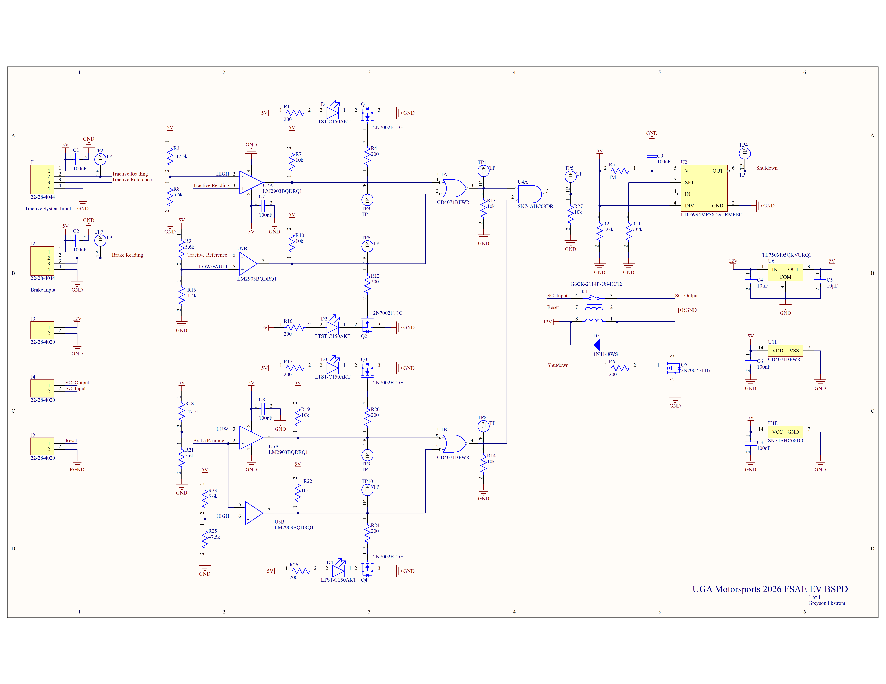
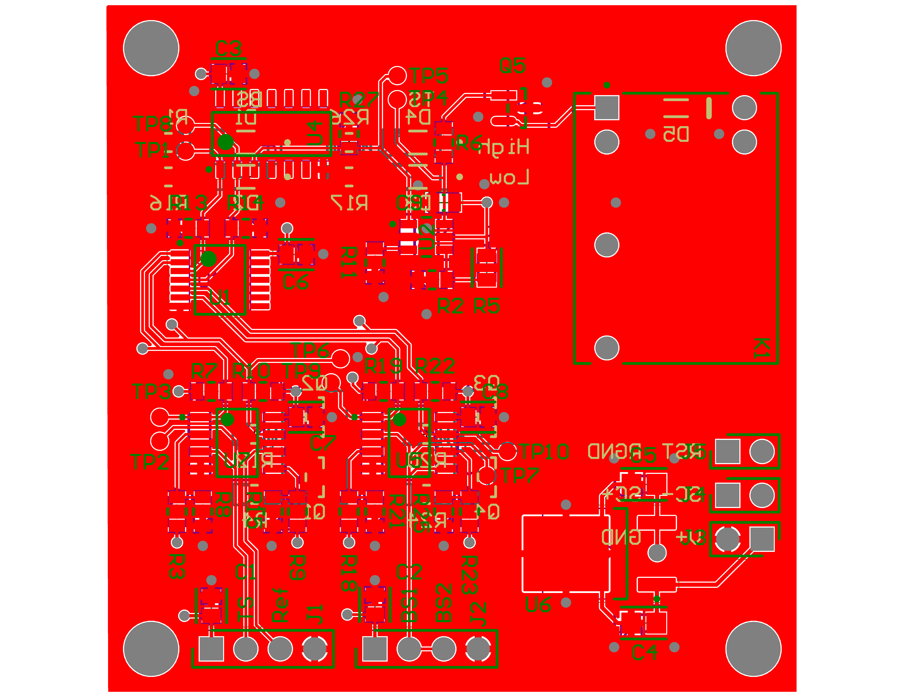
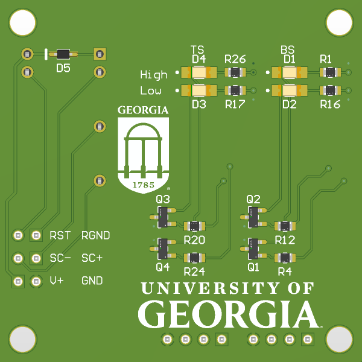

The Brake System Plausibility Device (BSPD) is a critical component of a Formula SAE EV vehicle. It checks for simultaneous braking and acceleration inputs and safely shuts down the car as stated in competition rules. The BSPD reads from two separate inputs: the Brake System Encoder (BSE) and the Tractive System Current Sensor (TSCS). Using LM2903 dual input comparators, the BSPD determines if the sensor readings are within nominal range. When detected to be outside of nominal range, the BSPD passes a signal to the onboard LTC6994 which disables the vehicle after 450ms.

The Brake System Encoder (BSE) input into the BSE Logic section of the Brake System Plausibility Device (BSPD) has a maximum input range of up to 12V. A voltage input range between 500mV and 4.50V is considered within normal operating range. Outside of these ranges the input is considered to be either nonfunctional for a voltage < 500mV or in a state of hard breaking for a voltage > 4.50V. The determination of the braking status is done by measuring the input voltage across a comparator. If the input voltage falls outside the specified range, the car is determined to be hard braking and a signal is passed through the BSE logic.

The Tractive System Current (TSC) is measured from the car’s main battery pack utilizing an ICE-425 hall effect sensor to measure the current through the car. When a current of 14.5A is detected within the tractive system, the TSCS logic section of the BSPD outputs a high signal. The signal from the current sensor outputs 2.568V at the trigger current and is determined to be short circuited when outputting a voltage < 500mV.
Both the tractive system logic and the braking logic are passed through a logical OR gate to check whether the output signal is too low or too high from each logic block respectively. The logic of the two blocks are then checked by a logical AND gate to determine if the vehicle is simultaneously undergoing acceleration and hard braking.

When both conditions are met, a signal is sent to an LTC6994 which only triggers after a calibrated 450ms delay. A 12V relay is then triggered and cuts off a signal to the shutdown circuit, disabling the car. The BSPD relay may be reset by a dedicated button to enable the latch.